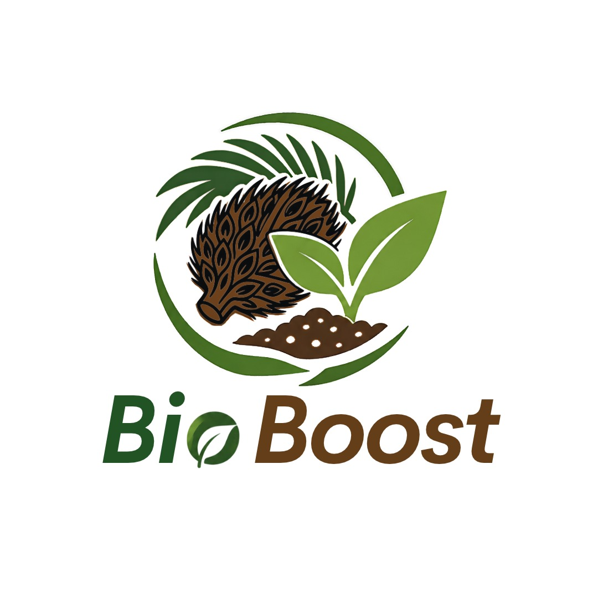

Ekonomi Sirkular
Potensi bahan sisa diolah menjadi sesuatu yang bernilai.

BIOBOOSTINOVASI PERTANIAN BERKELANJUTAN
BIOBOOST mengangkat potensi bahan lokal dan pemanfaatan limbah agroindustri untuk mendukung pertanian yang lebih berkelanjutan.
Potensi bahan sisa diolah menjadi sesuatu yang bernilai.
Varian produk disiapkan sesuai kebutuhan penggunaan.
Mengangkat potensi sumber daya lokal Aceh.
TENTANG KAMI
BIOBOOST adalah gagasan produk pupuk organik cair yang mengusung konsep ekonomi sirkular melalui pemanfaatan lima jenis limbah agroindustri lokal.
Dirancang sebagai gagasan pembenah tanah, nutrisi tanaman, dan stimulan biologis. Klaim manfaat perlu dikonfirmasi melalui pengujian produk.
Menggunakan potensi serat tandan kosong kelapa sawit, ampas tahu, ampas kopi, dedak padi, dan air kelapa tua.
Mendorong pemanfaatan sumber daya lokal serta pengelolaan sisa produksi dengan lebih bertanggung jawab.
Catatan: uraian ini menjelaskan konsep rencana bisnis. Klaim efektivitas, kandungan nutrisi, keamanan, dan dosis harus didukung pengujian sebelum dipasarkan.
PILIH SESUAI KEBUTUHAN
Tiga varian dirancang untuk segmen penggunaan yang berbeda.
Dibuat untuk: perawatan rutin tanaman hias di dalam maupun luar ruangan.
Kemasan: botol 1 liter.
Dibuat untuk: perawatan tanaman sayuran dan hortikultura.
Kemasan: konsentrat 1 liter.
Dibuat untuk: perawatan tanaman perkebunan pada fase pertumbuhan dan fase produktif.
Foto kemasan di atas merupakan ilustrasi tampilan, bukan foto kemasan final. Ikuti petunjuk penggunaan pada setiap varian. Uji terlebih dahulu pada sebagian kecil tanaman sebelum penggunaan rutin.
DARI LIMBAH MENJADI BERNILAI
BIOBOOST melalui tahapan pengolahan dan pemeriksaan sebelum produk siap digunakan.
Bahan dipilih dan diperiksa agar sesuai dengan standar internal BIOBOOST.
Bahan baku dipersiapkan melalui proses pengolahan yang terkontrol.
Produk diproses menggunakan metode khusus BIOBOOST dengan memperhatikan kebersihan dan konsistensi.
Produk diperiksa, kemudian dikemas dan diberi label sebelum dipasarkan.
Detail formula dan metode produksi merupakan bagian dari informasi internal perusahaan dan tidak ditampilkan secara terbuka.
KALKULATOR DOSIS
Pilih varian dan masukkan jumlah air atau jumlah pohon, lalu klik tombol Hitung Dosis.
Hasil kalkulator merupakan panduan takaran berdasarkan pilihan penggunaan. Ikuti petunjuk produk dan uji pada sebagian kecil tanaman terlebih dahulu.
PENTING DIPERHATIKAN
Rangkuman sesuai dokumen rencana bisnis yang kamu kirim.
Penting: varian spray tanaman hias adalah produk siap pakai, sehingga digunakan tanpa pengenceran. Angka 10 ml per 2 liter air hanya untuk konsentrat tanaman hias yang berbeda, jika nantinya dikembangkan. Dosis dan keamanan semua varian perlu divalidasi sebelum digunakan sebagai petunjuk resmi, terutama pada tanaman pangan.
LANGKAH KECIL, DAMPAK BERARTI
Rencana BIOBOOST memanfaatkan potensi lima bahan agroindustri: serat tandan kosong kelapa sawit, ampas tahu, ampas kopi, dedak padi, dan air kelapa tua. Ampas padat dari proses direncanakan dapat dipertimbangkan untuk pengolahan kompos setelah evaluasi mutu.
KAMI SIAP TERHUBUNG
Hubungi BIOBOOST untuk informasi lebih lanjut.